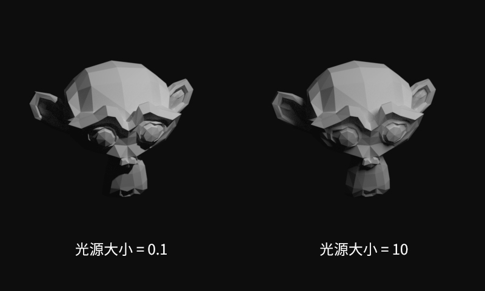

描绘真实世界的指南
你还在凭借经验和直觉去画图？怎样让你的世界更加真实？妄称“指南”，希望能带给你一定的启发。
1. 从人眼开始
感觉的差别阈限随原来刺激量的变化而变化。——韦伯定律
这样说很抽象，不如打个比方，你海淘了100元的东西，但是要付100元的邮费。另一个情况是你的东西价值10000元，同样要付100元的邮费，相比之下第二种情况就容易接受的多。人眼也是一样，在很暗的环境中，就算微弱的光也能分辨，随着亮度的增加，需要更多的光刺激才能感受到差别。
这是一条亮度与视力关系曲线，横轴为亮度（尼特），纵轴为主观亮度。注意横轴的坐标是几何级增长的。
2. 伽玛（Gamma）
既然人眼看到的光强和实际的光强不成正比关系，我们需要采用一定的方式将光强转换为人眼感受的实际值，比如相机上通常采用的伽马曲线。
伽马曲线公式：，其中取1/2.2时（如上图），最接近人眼的感受。这样一来，亮度为0.5的时候，就表示人会感受到50%灰色（在这之前50%灰色其实亮度在0.2左右）。伽马曲线将亮度值从线性（Linear）空间变到了伽马空间，方便了颜色的数字化处理和存储。
三维渲染中（如图(a)），需要在线性空间渲染，然后转换到伽马空间。图(b)直接将光强等同于人眼亮度进行光照计算，最终图像缺乏真实感。
仔细观察上面两幅图像，一般来说正面受光部分的明暗变化比较缓和，越靠近交界线处变化越为明显，在绘图的时候需要注意这一点。
事实上，为了减少明暗的突变，经常采用面积更大的光源，以形成柔和的边界与阴影。拍摄人像时的环形闪光灯也有同样的效果。

数字图像处理中，可以通过伽马校正以获取真实的亮度值，在一些特殊的模糊滤镜里会很有用。下图中经过伽马校正的图像就获得了流光溢彩的感觉，还可以看出明显的散景光斑（Bokeh）。
※色调映射（Tone Mapping）：伽马曲线其实表达了一种简单的色调映射关系。在HDR（High Dynamic Range ）渲染中，还有莱因哈德（Reinhard）色调映射，CE（Cry Engine）色调映射等。另外用于还原鲜艳颜色的胶片式（Filmic）色调映射也有不错的效果。
3. 环境光
物体不仅仅会受到来自光源的直接光照，还会受到其它物体折射或反射而来的间接光照，我们称之为环境光（Ambient Light）。环境光一般比较微弱，但物体的暗部很大程度上会受到它的影响。
右图中的虚线部分，本来应该是完全黑暗的（因为没有背景光），却被平面所反射的间接光照亮了。如果平面是有颜色的，球体部分还会呈现出微弱的色彩，这就是辉映（Color Bleeding）。
受硬件性能的限制，游戏很少像物理渲染引擎一样大量模拟光路，通常的做法是设定一个基础的环境亮度，然后使用环境光遮蔽（Ambient Occlusion）技术添加一些人为的阴影，一般是靠计算物体之间的遮挡程度实现的。
上图是刺客信条所使用的AO技术，墙角等部分有明显的变暗。在绘画领域中，这些就叫做闭塞阴影。

采用不同色调的光源和背景光能够很好地凸显出立体感，阳光的暖色和天空的蓝色就是不错的选择，注意上图中冷色调的阴影部分。很多绘画和设计作品都运用了这一技巧。
4. 距离感
实时三维渲染常用Z缓冲（Z-buffer）去存储每个像素与镜头的距离（实际上通常是距离的倒数，0表示无穷远）。Z缓冲的数据能被用于距离雾、景深等后期特效。
真实世界中的大气不是完全透明的，在白天，一般来说距离越远的物体，越会偏向灰蓝色。有时候游戏中需要故意添加距离雾（Distance Fog）来营造神秘或者阴森的氛围。
距离雾可以模拟均匀分布的雾气，此外还有不均匀的体积雾技术。雾的颜色有时还受到光照的影响，并且光在雾中会形成光柱。
单反相机由于镜头、光圈的结构特性，只有特定距离的物体成像清晰，这个现象就是景深（Depth of Field）。游戏、美术中常常使用景深来获得距离感。如果某处离镜头的距离是，它的弥散圆的半径可以近似用这个公式表示：，是一个常数，是光圈级数，为清晰的成像距离。
5. 材质
有关材质方面的模型和理论实在太多了，这里只谈谈次表面散射和菲涅尔效应，很多基于物理的渲染器都能实现。
次表面散射（SubSurface Scattering）材质又称SSS材质，人的皮肤就是一种次表面散射材质，光线可以穿过其中然后再散射出来。有光的地方就有散射，但明暗交界线处和较薄物体的背光处最为明显。观察下面这张超能陆战队的截图，左右脸的分界线呈现鲜艳的红色。注意渲染时一定要在线性空间才能得到正确的散射颜色。
物理学家菲涅尔（Fresnel）在观察中发现了菲涅尔效应，菲涅尔效应表明，对于同一种材质表面，观察角度偏离垂直方向越远，反射现象越明显。事实上除了金属等材质，菲涅尔现象几乎存在于一切表面。比如常见的水面，从近处往下能看见水中的鱼，远处就只能看见倒影。
可以看到上图中反射光在侧面观察时增强了很多。基于这一点，在绘制水面或者物体侧面时，不妨考虑一下菲涅尔效应的影响。